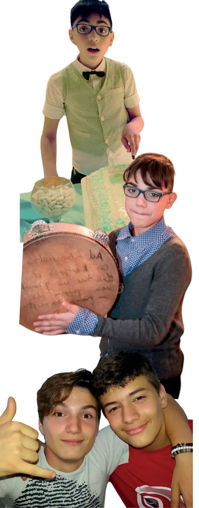

Comunità educativa di tipo familiare
Itaca
Ispirata all'isola di Ulisse, simbolo del viaggio della vita, accoglie bambini di entrambi i sessi. L'approccio educativo abbraccia lo sviluppo sociale, emotivo e creativo.
«Tieni sempre Itaca nella mente», scrive Kavafis: avere una meta, restare aperti al cambiamento e godersi il viaggio, affrontando le sfide con coraggio e imparando da ogni esperienza.